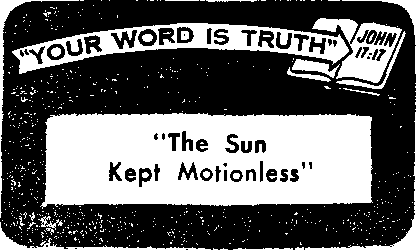

gineering.
THE MISSION OF THIS JOURNAL
News sources that are able to keep you awake to the vital issues of our times must be unfettered by censorship ond selfish interests. "Awake!" has no fetters. It recognizes facts, faces facts, is free to publish facts. It is not bound by political ambitions or obligations; it is unhampered by advertisers whose toes must not be trodden on; it is unprejudiced by traditional creeds. This journo! keeps itself free thot it may speak freely to you. But it does not abuse its freedom. It maintains integrity to truth,
"Awake!" uses the regular news channels, but rs not dependent on them. Its own correspondents are on all continents, in scores of nations. From the four corners of the earth their uncensored, on-the-scenes reports come to you through these columns. This journal’s viewpoint is not narrow, but is international. It is read in many nations, in mony languages, by persons of all ages. Through its pages many fields of knowledge pass in review—government, commerce, religion, history, geography, science, social conditions, natural wonders—why, its coverage is as broad as the earth and as high as the heavens.
"Awake!" pledges itself to righteous principles, to exposing hidden foes and subtle dangers, to championing freedom for all, to comforting mourners and strengthening those disheartened by the failures of a delinquent world, reflecting sure hope for the establishment of o righteous New World.
Get acquainted with "Awake!" Keep awake by reading "Awake!"
Published Simultaneously in the United States by the
WATCHTOWER BIBLE AND TRACT SOCIETY OF NEW YORK, INC.
117 Adams Street Brooklyn 1, N. Y., U. S. A.
and in Enola nd by WATCH TOWER BIBLE AND TRACT SOCIETY
Watch Tower House, The Ridgeway London N.W. 7, England
N. H, Knorr, President Grant Suiter, Secretary
Printing this issue: 3,800,000 4d a copy (Australia, 5d; South Africa, 3'/2c)
“Awake]” is published In the following 25 languages: Remittances for subitrrlpT.ions should he sent lu (hi: offlcie
Semlrnonthjy—Afrikaans. Cinyanja, Danish, Dutch. En- fn your cfiunlry. lithsirwJ.He aend your ceroRlance to
SlJsh, Flntilel], French, Gentian. Greek, Italian, Japanese, London. Hotiee erf expiration is sent at least two issues;
Norwegian, t’Ditugiiese, Spanish, Swedish, Tagalog, Zulu. before BUbsrrlptwn evplroA,
Monthly—Cebii-Vitiayan. Chiucie, Uocatw). Korean. Mala-
yalam, Polish, Tamil, Ukrainian.
Yearly subscript Ion rates Offices for sumlinonrlily editions
CHANCES of ADDRESS should reach us thirty days before your moving data. Give is your old and new address (If possible, your old address label). Write Watch Tower, Watch Tower House, The Rldgswayt London N.W. 7, England.
Canada, 1 fit) Bridgeland Ave,, Toronto 19, Ont.
England, Watch Tower Houk, The Ridgeway, London N.W. 7
Now Zealand. $21 Nw North Titi , Auckland, 8.W. 1
South Africa, Private Bag 2. P.O. Elandstcmldn, Tvl. 70c Entered as aeeond-rlaw matter at Brooklyn, N.Y Monthly editions cost half the above rates. Printed In England
The Bible translation ised In “Awata!” U the New World Translation of the Holy Scriptures, 1961 edition. When other translations are used the following symbols will appear behind the citations:
AS - American Standard Version AT - An American Translation AV - Authorized Version (1611) Da - J. X. Darby’s version
Dy - Catholic Dow version PD — The Emphatic Diaglott JP - Jewish Publication Hoc. Le - Isaac Lieser's version
Mo - James Moffatt's version Ro - j, B, Rotherham's version RS - Revised Standard Version Yff ••• Rohm Young’s version
CONTENTS
Does Your Child Belong to the State? 8
My Years in Prison in Communist China 22
“Your Word Is Truth”
A FRIEND OF PEACE"?
PEACE! How pleasant the very sound of the word! Peace is the state the Creator, Jehovah God, purposed for this earth and that he has promised someday will prevail—for is he not spoken of as “the God who gives peace,” and his Son as the “Prince of Peace”?—Rom. 16:20; Isa. 9:6; Ps. 46:9; 72:7.
Most fittingly, then, God’s Word recommends peace to us, saying: “Happy are the peaceable.” “As far as it depends upon you, be peaceable with all men.” “He that would love life and see good days, let him ... do what is good; let him seek peace and pursue it.” In sending forth the seventy disciples Jesus instructed them: “Wherever you enter into a house say first, ‘May this house have peace.' And if a friend [son] of peace is there, your peace will rest upon him.”—Matt. 5:9; Rom. 12:18; 1 Pet. 3:10,11; Luke 10:5,6.
Are you a friend or a “son” of peace, as though your last name or surname were “Peace”? Are you peace-conscious? What are you willing to do for the sake of peace? Peace between whom? Not peace between the nations of this world, for which of their rulers could you or any group of peace lovers influence? But you can do something about peace between yourself and the rest of the members of your own family, between yourself and those with whom you work, between yourself and those with whom you worship; in short, between yourself and your fellowman. Yes, you can be “peaceable with all men.”
One way in which you can show you are a friend of peace is by refraining from saying what you think and feel when you are annoyed, irritated or angry. Instead, resolve as did ancient King David: “I will guard my ways to keep from sinning with my tongue. I will set a muzzle as a guard to my own mouth, as long as anyone wicked is in front of me.” Or, if speech is advisable, remember: “An answer, when mild, turns away rage, but a word causing pain makes anger to come up.”—Ps. 39:1; Prov, 15:1.
For the sake of peace ignore insults, do not retaliate. Especially exercise care when another tries to provoke you to verbal or physical combat. Under such circumstances heed the counsel of Jesus: “Do not resist him that is wicked; but whoever slaps you on your right cheek, turn the other also to him,” thereby proving yourself a friend of peace.—Matt. 5:39.
Fallen human nature is prone to be selfish and vainglorious, both of which traits work against peace. Instead of yielding to these fallen tendencies, pursue a peace-producing policy, such as the apostle Paul recommends; “Doing nothing out of contentiousness or out of egotism, but with lowliness of mind considering that the others are superior to you, keeping an eye, not in personal interest upon just your own matters, but also in personal interest upon those of the others.” In brief, avoid rivalry.—Phil. 2:3,4.
Have you offended another? Then for the sake of peace make amends. At times it may even be wise to apologize when you feel you are in the right, paying back, as it were, that which you had not taken. (Ps. 69:4) As Jesus commanded: “If, then, you are bringing your gift to the altar and you there remember that your brother has something against you, leave your gift there in front of the altar, and go away; first make your peace with your brother, and then, when you have come back, offer up your gift.” That takes humility, but is not peace worth it?—Matt. 5:23, 24.
But, above all, to be a friend of peace, cultivate the quality of love, for love removes ever so many causes of friction and strife. Is not love long-suffering and kind? It does not pay back evil with evil but suffers it. Yes, “it bears all things, . . . endures all things.” How much friction and strife you can avoid by just being willing to bear and endure grievances! On the other hand, love will help to keep you from needlessly offending others, for it “does not behave indecently.” And it “does not become provoked.” What could be plainer than that? No question about it, love and peace go hand in hand. Such qualities as self-control, humility and contentment also help one to prove himself a son of peace.—1 Cor. 13:4-7.
Not that peace is the chief good. At times it must yield to that which is more important, namely, truth and righteous principles. You may not compromise these for the sake of peace. Thus in the interests of peace the patriarch Abraham let his nephew Lot choose the best pastures, but when Lot was taken captive together with all his household, to free him Abraham engaged in war. So there is “a time for war and a time for peace.”—Eccl. 3:8; Gen. 13:8-12; 14:14-16.
Particularly would you at no time make peace with God’s enemies, but, rather,, follow the example of Jehu of olden time. When King Jehoram of Israel asked him: “Is there peace, Jehu?” Jehu replied: “What peace could there be as long as there are the fornications of Jezebel your mother and her many sorceries?” This is also in line with the words of the disciple James on the subject: “The wisdom from above is first of all chaste,” and only “then peaceable, reasonable,” and so forth. —2 Ki. 9:22; Jas. 3:17.
No doubt, one of the chief reasons why there are so many unhappy homes and so many juvenile delinquents today is that parents often do not draw the line between peace and principle. For the sake of peace in the home husbands and fathers often shortsightedly let their wives and children have their own way regardless of what is right, wise and best. Many husbands and fathers who have strong-willed or nagging wives or unruly children have thus surrendered their headship. But has this made for peace? No, it has only made for confusion, for neither lasting good nor peace can come from violating God’s righteous principles.
So, for the sake of your own well-being as well as that of others, make a pursuit of peace, be peace-conscious, be a friend, a son, of peace, but never compromise principle for the sake of peace!
The Bible outlines it. Do you practice it?
ARE you affiliated with some church? If so, why do you attend its services? You may answer, ‘To worship God.* But what do you do in church that constitutes worship that is pleasing to God? Is it the singing? observing some ritual? listening to a sermon? hearing a prayer and saying Amen to it? Are these the requirements for true worship, the observance of which is pleasing, to God ? Apparently many think so, but what do you think?
Do you agree with the popular slogan: “Go to the church of your choice’’? Do you feel that if one worships the way he thinks best, it will be pleasing to God? Comments appearing in the press last year indicate that many people evidently are of this opinion. According to the Newark (N.J.) Evening News of April 15, one young man who was interviewed thought that “a person should join a church whose doctrines fit his beliefs.” In the same survey, a Kansas youth said that individuals “should find a church they like just as they find a job that suits them.” But is worship that suits the taste of the individual necessarily acceptable to God? What really constitutes worship that is pleasing to Him?'
Every person sincerely interested in pleasing God will give serious and prayerful thought to these questions. They will observe that God does not accept all worship. For instance, when both Cain and Abel offered sacrifices to God, the Bible record informs us that he looked with favor on Abel’s animal sacrifice, but rejected Cain’s vegetable offering. Instead of accepting correction and ‘turning to do what was good,’ Cain was offended, and his bad heart condition was expressed in violence against his brother.—Gen. 4:3-8.
Does not this 'Scriptural example emphasize that God is not pleased with all worship? It also shows the need of humbly accepting correction from God’s Word. It may be that we are not rendering the type of service that God requires. But when information from God’s Word brings this to our attention, will it harden us as it did Cain? Or will we be humble enough to accept correction and bring our life into harmony with God’s revealed will? In his sermon on the mount Jesus made clear that not all worship is pleasing to God; further, he showed the vital need of worshiping, not our way, but the way God requires.
“Go in through the narrow gate,” Jesus encouraged; “because broad and spacious is the road leading off into destruction, and many are the ones going in through it.” Who are among the ones traveling this broad road to destruction? Only nonchurchgoers? Only those that do not profess some religious faith? Jesus explained that many are professing Christians: “Not everyone saying to me, ‘Lord, Lord,’ will enter into the kingdom of the heavens, but the one doing the will of my Father who is in the heavens will. Many will say to me in that day, ‘Lord, Lord, did we not prophesy in your name, and expel demons in your name, and perform many powerful works in your name?’ And yet then I will confess to them: I never knew you! Get away from me, you workers of lawlessness."—Matt. 7:13, 21-23.
These protesting ones perform acts of worship that they think are commendable, meritorious. Their worship is proper in their own eyes, but they never bother to consult God’s Book of requirements with a desire to ascertain if it is right in God’s eyes. They perform acts of worship, but contrary tc- the way God requires. It is their way, not God’s. Thus, their worship is lawlessness, unacceptable and, therefore, is rejected.
In order to render worship that pleases God, one must first learn what ‘the will of the Father’ is. This requires taking in knowledge of Jehovah and his purposes. Because of the flood of false propaganda as to what is God’s will, more than just a casual search is necessary. "If you keep seeking for it as for silver, and as for hid treasures you keep searching for it,” the inspired proverb says, "in that case you will understand the fear of Jehovah, and you will find the very knowledge of God." Such a diligent search of God’s Word the Bible is essential for true worship. It is pleasing to God. Is there such a quest for Bible knowledge in your church? —Prov. 2:4, 5.
A Presbyterian minister explained, in the November 17, 1962, issue of The Saturday Evening Post, that this basic essential of true worship is absent from the churches. He described his efforts to stimulate spirituality among church members: I began calling on members telling them “what I thought were the main doctrines of our church and asking if they had any questions. Almost every time they would cough, hesitate, smile shyly, try to change the subject and as soon as possible rush me to the door. Soon it became difficult to find members at home. When they were home, many preferred talking at the door to inviting me in. . . . In another effort to develop members spiritually, I tried a church-wide program of small-group discussions in members’ homes. No more than ten persons ever attended. Within two months the program was dead.”
But it is not only the parishioners that are not seeking the knowledge of God. This minister, who was in charge of a church of more than 800 members, said that at meetings of ministers “we never discussed theological questions or how to meet better the spiritual needs of our communities. At ministerial meetings the talk was mostly about buildings, salaries, or membership-campaign gimmicks.” Yes, the indifference of churchgoers toward the Bible is merely a reflection of the attitude of their overseers. On the whole, neither concentrate on seeking the knowledge of God. Therefore, their worship is not pleasing to God, even though they attend a church service that includes singing, ritual, a sermon and prayers. The above-quoted cleric saw no possibility of changing conditions in the churches, so he quit the ministry.
True worship does not stop with taking in knowledge of God, but includes publicly declaring these wonderful truths. The apostle Paul said that this is necessary for salvation: “For with the heart one exercises faith for righteousness, but with the mouth one makes public declaration for salvation.” And the apostle Peter explained that the purpose of the Christian congregation is “to offer up spiritual sacrifices acceptable to God.’* This means, he said, that each member “ ‘should declare abroad the excellencies’ of the one that called you out of darkness into his wonderful light.” —Rom. 10:10; 1 Pet. 2:5, 9.
READ THE NEXT ISSUE
• Is Liberia Losing Ifs “Love of Liberty"?
* Christian Conscience and the State.
* Aiding the African People
in a Time of Change.
The clergy have failed to equip church members with the knowledge necessary to perform this public worship that is pleasing to God. For this reason church members are not fulfilling the Christian requirement to witness to others. On this the Protestant magazine The United Church Observer observed: “One of the distinctive marks of the average church member today is his rehietawie to witoa&E. to his toito. ... Lt is one of the tragedies of the modern church that it has generally been content to leave public witnessing to little groups of extremists.”
The situation is such today that many church members do not even know that it is ‘the will of the Father’ that they preach to others. But it is true. Jesus laid the obligation on all his followers when he said: “Go therefore and make disciples of people of all the nations, . . . teaching them to observe all the things I have commanded you.” People may perform many wonderful works, even doing them in the name of the Lord, but if at the same time they fail to meet this Christian requirement, Jesus will say to them: “Get away from me, you workers of lawlessness.” One must worship God’S way! —Matt. 28:19, 20; 7:23.
Right Conduct
Although acquiring knowledge of God and sharing it with others are pleasing to God, if such worship is rendered by an Immoral person it would be unacceptable. “In accord with the holy one who called you," Peter said, “you also become holy yourselves in all your conduct, because it is written: ‘You must be holy, because I am holy.’ ” Thus, to be pleasing to God Christians must “put away all moral badness.” Their conduct must be above reproach, exemplary.—1 Pet. 1:15,16; 2:1.
The tremendous increase of moral badness today is evidence that the churches have failed to worship God his way. Right worship produces
right conduct. But worship that fails to put emphasis on ‘finding the very knowledge of God’ and making a “public declaration” of it to others does not change lives toi "toft LfeWet. a. 'Kt'ii-KTiDwn p’nysician made this observation in Parents’ Magazine of November 1960: “A surprisingly high proportion of the juvenile delinquents brought to the courts of Boston and New York City have also been found to be regular church attendees, according to a study of the Harvard Divinity School. This study also shows that despite a countrywide increase in Sunday school enrollment from 51 per cent of the under-21 population in 1940 to 63 per cent in 1958, there has been a marked rise in juvenile delinquency.” Does not this indicate the failure of the churches to inculcate the principles of God’s Word? And does it not stress the need of taking in the knowledge of God?
Perhaps you have been unaware of God’s requirements for true worship. If so, do not be offended when they are brought to your attention. Do not let correction affect you as it did Cain. Be humble. Examine God’S Word. Your very life depends on your response to the knowledge it contains.—John 17:3.
DOES your child belong to you? “Well, of course it does!" you parents reply. “We brought this baby into the world. It's ours. We aye going to raise it and educate it and love it. Does anyone even pretend this is not our child?"
But picture for a moment the case of a young father and mother with their first baby. They are in Greece. The spring sun is warm, with promise of life; a soft breeze comes in from the blue Aegean Sea. With the pretty, dark-haired mother tenderly holding her infant, they enter a building with a large open courtyard. Trembling and on the verge of tears, the mother lays the baby on a table for examination by an older man. Coldly he notes that the child is small, sickly. He says harshly: “That baby will not grow strong. Put him on the mountainside; let him die.” A burly soldier roughly shoulders the parents out of the way, picks up the baby and marches away. The young mother collapses, sobbing; her husband tries to console her.
“What a horrible scene!” you say. “What warped imagination ever dreamed of such a thing?" But this was no dream. This cruel and tragic occurrence was repeated many times in the ancient Greek state of Sparta where the government under a cruel dictator adopted the view that children belong to the State. A child who was either deformed or sickly was left out in the hills to die. The children were taken away by the State. Officials made the decision; the parents had nothing to say.
You parents who love your children and hold them close in the family circle hate to think that such a terrible thing could even happen. You know the happiness of children, their gurgling laughter, chubby little arms around your neck, those soft, trusting eyes that look to you for care, instruction and wise decisions. Your love is their guarantee of food, warmth, education and the training of them to be mature, balanced people. You want to decide what things will be best for them. Could any public official possibly be as interested as you, or be as conscious of your child's welfare?
After all, who produced the child? Was it not the father and mother? Was this not according to the divine arrangement of the all-wise Creator who brought the first human pair together and gave them the privilege and happiness of bringing children into their home? By very design you parents are the natural guardians of your children. (Gen. 1:28) The State can provide utilities, such as water, electricity and schools, but the God-given provision of procreation and the decisions for the loving care of children the Great Provider has given to married couples, not to departments of State or officials outside the family circle.
Even the law of free nations has recognized the divine source as well as the value of the parent-child relationship. Lord O’Hagan, a well-known Irish jurist, has explained it: "The authority of a father to guide and govern the education of his child is a very sacred thing, bestowed by the Almighty, and to be sustained to the uttermost by human law. It is not to be abrogated or abridged without the most coercive reason. For the parent and the child alike, its maintenance is essential that their reciprocal relations may be fruitful of happiness and virtue.”—Re Meads, I.L.R. 5 Eq. 98.
This opinion wisely acknowledges that it is the Creator himself who has provided the family relationship, knowing that decisions for the welfare of a child would best be made by its own parents. But is this view accepted in all states?
Rather, it appears that in totalitarian nations the opposite view is taken. Cruel dictators, hungry for power, have claimed that children belong to the State, On this theory the dictator can exploit the children for his own political advantage. It was Lycurgus, dictator of ancient Sparta, who originated the practice of abandoning to their death babies that were not thought likely to grow strong. Morality and family were nothing to him; children should be bred like horses or dogs—a master race! Wives should be ready to cohabit with any man likely to father a strong child. Under his cruel laws, all boys were taken from their parents at seven years of age to be raised in youth camps. Here they were taught to steal, to be hard, quarrelsome, ruthless. They did become like animals and are known to this day as the ‘brutish Spartans,’ How would you as a parent feel about having your son trained in stealing? Or your sick baby exposed to its death on the mountainside?
You may feel relieved that you did not live under the rule of ancient Sparta. But what of the twentieth century? In our time the Nazi dictator Hitler also regarded children as belonging to the State. He wanted a master race too. Under his Nazi system, and under the guise of medical and scientific enlightenment, boys were taken away from their parents to train them for the ‘Hitler Youth,’ and young girls to use them for breeding, out of wedlock, under medical supervision, resulting in their eventual destruction, morally and spiritually. How would you feel about your son’s being trained to be a little Nazi? Or your daughter taken by the State for a life of immorality? Officials made the decision', the parents had nothing to say.
It is not even necessary to look back to Nazi Germany. In Red China, today, the industrial "great leap forward” has also broken many families. Fathers and mothers are in labor battalions; children are raised by the government. Once more officials make the decision; parents have nothing to say.
After viewing the evil of dictatorship, you parents will say: “I’m certainly glad to live in a democracy, some place where I can make decisions for my children, where they do not belong to the State.”
You have reason to be glad, if democratic principles of law are followed. Consider, for example, the fine statement of an American judge that protects parental control: “We have not yet adopted as a public policy the Spartan rule that children belong, not to their parents, but to the state. As the law stands, the parents forfeit their natural right of guardianship in cases where they have shown their unfitness by reason of moral depravity.”—Re Tuttendario, 21 Pa. Dist. R. 561.
Parents under this principle have guardianship save in cases where unnatural parents neglect or mistreat their children and endanger their welfare, “Neglect” is defined as “negligence, habitual want of regard.” When there is real neglect state agencies can properly take over custody from such irresponsible parents.
But how is neglect to be proved? The proper course for free nations was outlined by a Canadian judge: “A parent’s rights to the custody and upbringing of the child are sacred and'not easily lost . . . the state steps in, and after due judicial inquiry, if the child is found to be in fact a neglected child, it is made a ward of the Children’s Aid Society.”—Re Chiemelew-ski, 61O.L.R. 651.
Lord Justice Bowen, a British judge, explained the limitations that properly restrict official interference with decisions that are made by the parents: “It is not the benefit of the infant as conceived by the Court, but it must be the benefit to the infant having regard to the natural law which points out that the father knows far better as a rule what is good for his children than a court of justice can . . . excepting cases of immorality, or where he is clearly not exercising a discretion at all . . . it is not mere disagreement with the view taken by the father of his rights and the interests of the infant that can justify the Court in interfering. If that were not so we might be interfering all day and with every family,”—Re Agar-Ellis, 24 ch. D. 317.
The principle outlined in this judicial opinion is very important. If the parents are seriously endeavoring to exercise their discretion and to make the best decision they can for the child, there is no basis for state officials to overrule the parents and to impose another decision. Only when parents have failed to care and make no decision is there neglect. Then the State can intervene.
Insofar as parents and children have the protection of these good principles they can be grateful. But just how strong is that protection? More and more there is a tendency of courts and minor officials to depart from respect for the family and to overrule parental decision by imposing, instead, official decision.
Magistrate O’Brien of Wakefield, England, has pointed out in the Times (London, March 21, 1960) the danger of such official interference: “The welfare state has brought into existence procedures by which the natural rights of parents over their children can be encroached upon out of the highest motives. Those of us who are magistrates are constantly under the temptation to assume that we know better than deviant parents and others how their children should be looked after . , , The powers we possess are excellent in themselves, but their abuse can lead to a new and subtle form of tyranny.”
The above statement was made by a judge when discussing the cases of children of Jehovah’s witnesses that have arisen over the worldwide controversy about blood transfusion. In these cases officials and courts even in the Western world are not confining themselves to seizing children where there is real neglect, “habitual want of regard,” or a refusal of the parents to make a decision. The word “neglect” is being stretched far beyond its real meaning in order to justify invading the family circle and substituting official decision for the view's of sincere and conscientious parents who love their children and are trying to do what is best for them.
That there is no real neglect is made plain by a statement in the Medical Journal 0/ Australia; “Few people would think of disputing the need to intervene when a child suffers because of the carelessness, indifference or frank hostility of the parent, but in the present instance none of these elements may be present. The parent, convinced on religious grounds that a blood transfusion would be a spiritual disaster for the child, acts sincerely according to his lights, and our disagreement with his view, no matter how strong it may be, provides no grounds for impugning his concern for the child’s best interests.’’ ■
A Canadian paper, the Kingston Whig-Standard (October 4, 1962), accused the local officials of “Playing God” and said: "A child loved, controlled and cared for can never be a neglected child in any sense of the term , . . society is also guilty of permitting once more the outrage of reaching inside a home to snatch away a child, largely because the community does not agree with the religious views of the parents.”
But these official invasions of the family circle are not confined to Canada. In England it was revealed in September, 1962, that the Ministry of Health had sent out to doctors a year earlier a secret instruction telling them how to protect themselves legally when they take the dubious course of giving blood transfusions to children without the parents’ permission. Why secret? What was the Ministry of Health afraid of? The same problem of disagreement with medical practice had been known for more than fifty years with respect to other groups such as the Roman Catholics and Christian Scientists. Why was a secret order necessary to deal with the infinitesimal number of cases involving children of Jehovah’s witnesses?
Hie answer, of course, is that many newspapers around the world have whipped up such an emotional storm over this matter by their exaggerated presentation of the cases, that people have wholly lost sight of the basic questions involved.
In Australia seven different states of the Commonwealth have in a short period passed laws to enable doctors to force blood transfusion on the children of Jehovah's witnesses against the will of their parents. Only blood transfusion can be given in this manner without trial and without parental consent. No other form of medical treatment has been put in such an exalted position. Australia, as a democratic state, prides itself that “the law is no respecter of persons.” But Jehovah’s witnesses are the only group whose children can be removed from them in this way without the formality of a trial. New Zealand has recently passed a law to the same effect. Just as in Sparta and Nazi Germany, officials make the decision; the parents have nothing to say.
Some may feel that these official encroachments are justified because there is an emergency need for what the newspapers always describe dramatically as “lifesaving blood." But is this really so? Surprisingly enough, at the very time administrators and legislators are bending every effort to force blood on Jehovah’s witnesses, thoughtful doctors are admitting that blood transfusion is a medically dangerous practice, the use of which should be greatly restricted.
Recently there was published in the United States an authoritative textbook for surgeons edited by Drs. Artz and Hardy. It is entitled "Complications in Surgery and Their Management.” One section is “Complications of Blood Transfusions.” The subheadings are helpful in demonstrating the number of different dangers that arise: "Hemolytic Reaction,” “Allergic Reactions,” “Bacterial Contamination,” “Pulmonary. Congestion Not Attended by Circulating Volume Overload," “Circulatory Overload,” “Cardiac Arrest,” “Transmission of Disease.” Under the heading “Cumulative Mortality from Complications of Blood Transfusions” the following statement appears: “The annual mortality from only 3 complications of blood transfusion (hemolytic reactions, overload and serum hepatitis) is computed to be 16,500. Although some assumptions used in arriving at this figure may be challenged, one cannot dispute the fact that there is a tremendous loss of life and induced illness from this procedure, which is intended to be therapeutic. In terms of disability and loss of life the sequelae of blood transfusions rival some of our major public health problems.”
Note the admission, “there is a tremendous loss of life and induced illness.” The figure of 16,500 dead would mean a line of corpses sixteen and a half miles long! This is from only three of the many complications. In addition there is the illness caused by such treatment.
Another medical writer, Dr. Walter Alvarez, writes: “It is really hard to understand why, when the risks are so great, thousands of us doctors keep ordering transfusions.”
“When the risks are so great” and with an annual line of sixteen and a half miles of corpses to prove it, this is the medical practice that legislators, judges and doctors are forcing on helpless little children whose parents are trying to protect them!
When cases involving blood transfusion are heard in court, much is said about the risk parents are taking if they do not allow this treatment. As a rule no mention is made of the risks if they do. In honesty doctors should admit there are risks on both sides. Otherwise only half the story is being told. When there are two risks a decision must be made as to which one will be accepted, and this is a decision that properly belongs to the parents. No decision is neglect; but if the parents elect one risk instead of the other there is no neglect, no basis for official interference.
In Canada an official of the state agency known as the Children’s Aid Society openly announced on the radio (March 28, 1960) the dictatorial theory that “parents don’t own their children.” To prove this the Children’s Aid Society at Vancouver, B.C., acted on the 29th day of January, 1963, to seize without trial Christopher Wolstenholme, three years old. Since the parents had exercised their discretion by electing not to risk a blood transfusion, the state officials pretended the boy was neglected. The officials were ready to take the risk; it was not their child. He was given a blood transfusion. He was returned to the sorrowing parents a few days later. He was no longer neglected; he was dead! The decision of the parents had been overruled. At Galt, Ontario, Canada, a baby girl was born to Mr. and Mrs. A. Livingston on August 26, 1962. The Children’s Aid Society demanded that custody be taken from the parents on the ground the child was “neglected.” A doctor swore that without a blood transfusion she might die “in a matter of minutes.” The judge, in consternation, quickly made the order, though it was Sunday and the order was obviously illegal. The baby was rushed to the Sick Children’s Hospital in Toronto, where the doctors are more knowledgeable and less excitable. The child was held for eleven days and released to the parents without either receiving or ever having needed a blood transfusion. The alleged emergency that was the basis of snatching the baby from her parents was a product of the imagination of the doctor involved. Again the decision of the parents was overruled.
There was a similar case of imaginary emergency at Lagrange, Indiana, January 30, 1962, when a court removed from his parents custody of eight-year-old Dennis Johnson, following an accident. The local officials all appeared prominently in the newspaper. Many people in the area were convinced the child's life had been saved by a blood transfusion. In fact, he did not get one at all because he did not need it. Seizure of the child was a wholly gratuitous attack on the rights of the family.
These cases of seizure of children follow a pattern that is very dangerous from a legal standpoint and creates a menace to all families. The “emergency” is treated as an excuse for ignoring all the elements of a fair hearing and for denying children the protection of parental as opposed to official decisions. In one recent case in Ontario, Canada, an emergency lower court order of this kind was reviewed by a judge of the Supreme Court. In quashing the order the Court said: “Was there a hearing in the sense that this word is understood in our courts with all its attendant requirements of natural justice? ... I am unable to say that the haphazard affair which emerges from the transcript meets this test.” (Forsyte v. Children's Aid Society, 1963, 1 O.R.P. 49) Instead of a “due judicial inquiry” this travesty of justice could not be classified as a hearing at all.
Respecting this case the Kingston Whig-Standard said editorially: “The question of the interference of officials or quasiofficial individuals with the unique, sacred, relationship between loving and conscientious parents and the children of such parents is something which requires the most careful and dedicated consideration of every citizen ... In Kingston we have just seen another child of parents who happen to be members of the sect of Jehovah's Witnesses taken away from those parents without even the formality of a court hearing In which the parents could plead.” When things like this can happen, how safe are your parental rights?
In the United States there is a constitutional guarantee of “due process of law.” Nevertheless, orders seizing children have been made without so much as notice to the parents. All the nations mentioned, ace democratic states of the Western world. Yet public officials, judges and legislators have transgressed proper legal principles in their eagerness to invade the families of Jehovah’s witnesses and to snatch away children on the flimsiest pretext.
Decision is denied to the parents and made by the State. So how much difference remains between what is done here and the practices of dictator nations where public officials openly and without pretense make decisions instead of the parents? Is there any remaining distinction? Parents, is this what you would want to happen to your child—to have it taken away by public officials stampeded by an imaginary emergency and without giving you the elements of a fair hearing?
What is it that is causing such a storm? Why should public officials break the law, seize children and conduct court proceedings in great emergency, producing inciting headlines in the newspapers? Is blood transfusion really that valuable?
One prominent Canadian physician, Dr. F. B. Bowman, has published an article (Maclean's, August 26, 1961) entitled “Three Blood Transfusions Out of Four Are More Likely to Harm than to Heal.” He described them as “a needless and sometimes fatal risk to the patient. . . . Many doctors share my view that giving blood transfusions has assumed the proportions of a fad.” Another, Dr. Bruce Chown of Winnipeg said: “Blood has always had a mystical quality; its use in the operating room is more often mystical than scientific.”—Canadian medical Asbo-elation Journal, Vol. 77, p. 1037.
Some other doctors have been honest enough to admit that the problems have been created by the prejudice and intolerance of the doctors themselves. Drs. M. Minuck and R. S. Lambie at St. Boniface, Manitoba, published (May 27, 1961) in the official journal of the Canadian Medical Association a fair discussion of the proper means of medical treatment in the cases of Jehovah’s witnesses. They said:
“Recently . . . the doctors practising at our hospital were called upon to treat several patients of the Jehovah’s Witnesses religious order. The problems presented by such patients stimulated a great deal of discussion, discussion which soon pointed up the fact that there exists considerable confusion, emotional bias, intolerance, and ignorance not only with regard to the tenets of the Witnesses’ faith but also to the legal and ethical responsibilities involved in their medical treatment. . . . We cannot stress too strongly the sincerity with which the Jehovah’s Witness believes that he must not violate the Holy Scriptures.”
Many sincere people have been led to the emotional view that what is being done in the cases of Jehovah’s witnesses’ children is a necessary part of public care of children. But when the doctors admit that the treatment is a “fad,” “more mystical than scientific” and that the medical teams are in these cases motivated by ‘confusion, emotional bias, and intolerance’ we begin to get to the bottom of this. Does it honestly sound as though there is concern for children, or is this controversy a mask to disguise persecution of a minority?
Consider a recent experience in England. The joint chairman of the British Medical Association and Association of Magistrates appeared on television with one of Jehovah’s witnesses at Cardiff, Wales. During the discussion prior to the broadcast the chairman admitted that problems had arisen where the conscience of Christian Scientists had conflicted with medical recommendations. Had any action been taken? No! Catholics too had disagreed with certain medical decisions. Action taken? None. What about Jehovah’s witnesses; have you had any cases arise? No, not here. “Then why have you made a special ruling relating to cases of Jehovah’s witnesses, which have never arisen, while totally ignoring the problem of more powerful groups that have already confronted you?” “I don’t know.”
A Canadian newspaper, the Toronto Daily Star (December 11, 1958), has pointed out the danger' of extending state power over children:
“The Witnesses are not the only religious group which collides with 20th century scientific practice. Christian Science doctrine has nothing in common with modern medicine. Roman Catholic doctrine conflicts with some medical practice, when it forbids birth control by mechanical means or abortion even when the life of a woman may be at stake. Yet there is no mass outcry because of these beliefs, and properly so . . . (The) Witness lawyer poses a danger: ‘If one of the Witnesses can lose custody of his child because he disagrees with a certain form of medical treatment, then any parent who happens to disagree with any form of medical treatment can immediately have his child removed from his home and declared a neglected child.’ If piecedent widened out to snatching children for other medical treatment, let us consider first how much medical treatment of just 50 years ago is now regarded as useless or even harmful.”
Other religious groups have disagreed with medical practice for years and no one ever got very disturbed about it. If it is proper to seize as “neglected" the children of Jehovah’s witnesses when they disagree with a medical doctor, it must be equally proper to seize without trial the children of Roman Catholics and Christian Scientists or anyone else who dares have an opinion different from any doctor.
The threat to Roman Catholics was recognized by an official Catholic newspaper, the Canadian Register (January 14, 1961), which commented editorially: “It is only one step from imposing blood transfusions on patients by law to subjecting patients to sterilization and abortion on therapeutic grounds . . . because this obligation rests on the conscience of the patient, no medical or civil authority has the right to force him to accept such treatment against his conscience • . . And since the responsibility for the life of a child rests on the parents . . . the state cannot force them to subject the child to treatment which they consider morally wrong.”
You parents reading this article may not all be concerned at the moment about blood transfusion, but the real issue is: Do you want to make decisions for your family? As public officials more and more adopt the view that children belong to the State, that officials and not parents will make the decisions for families, what protection remains for you and your children? Do not assume it cannot happen to you. It has already happened to Jehovah's witnesses. Their children are already being treated as belonging to the State and official decision substituted for the views of loving parents.
But how can other groups be touched? A doctor in France recommended that a young married woman should commit adultery as “urgent treatment," in his “professional opinion, the only one capable of saving her.” Would ft have been neglect to refuse such therapy? It is not unusual for psychiatrists to recommend sexual relations outside marriage as a health measure. How would you feel if your children were removed as “neglected” because a state expert decided your ideas of moral cleanness were old-fashioned and should not interfere with “necessary scientific treatment,” that is, sexual immorality? Should a young Catholic woman or girl be taken from her family and subjected to the medical treatment of abortion? Sterilization and even euthanasia are other practices that have been recommended at times. The road of discrimination, once embarked upon, is long and slippery.
When state officials are allowed to decide what is good for other people’s families, then children in essence belong to the State and the door is open to all the evils and vices of dictatorship. The brutish Spartans, the cruel Nazis, and other States that followed the evil practice of breaking down the family circle have all disappeared from history. Other nations that adopt the same practices will come to a similar end.
It is time for judges, public officials and professional men to call a halt to the “subtle tyranny" of official and State control over the families of responsible and conscientious parents whose only real offense is that their opinions differ from the currently accepted thinking of the majority! As Lord Atkin, respected Catholic historian, once said: “The most certain test by which we judge whether a country is really free is the amount of security enjoyed by minorities.”
Parents, too, need to realize what it means when children of a sincere Christian group in their midst can be removed without as much as a trial. All families are threatened by the precedent created, It is time to call a halt.
WATCHTOWER PRESIDENT
T BISLt ANO TRACT SOCIETY
PF PENNSYLVANIA
QFFIC* OF TH* FftESIO^NT 1*4 COLUMBIA iHOpKLYN 1, NEW YORK, UrB,A»
April 17, 1963
His Excellency
President W. V. S. Tubman
Executive Mansion Morirovia, Liberia
Excellency:
Today we received a calle from Mr. John Charuk, "branch representative of the Christian organization known as the Watch Tower Bible and Tract Society in Monrovia, reporting that you have ordered missionary representatives of Jehovah’s Witnesses from the United States, Canada and other countries to leave Liberi a within two weeks or be deported.
We protest this action and urge you to reconsider and rescind this order lest you be found to be fighting against the preaching of the Kingdom message. Since 1946 Jehovah's Witnesses have been peaceably carrying on their Christian missionary work in Liberia, teaching the people to read, and write and believe in God's Word the Holy Bible. Now in recent weeks this same Christian group have been severely persecuted as you know because of their conscientious refusal to salute any national emblem as a violation of Bible principles set forth at Exodus 20:4,5, Daniel 3 and 1 John 5:21. Jehovah’s Witnesses are a lawabiding people, but they refuse to compromise their faithfulness to the Almighty Cod Jehovah when it concerns their worship. .
Because of this little children have been expelled from school, men and women have lost their employment because of their faithfulness to their belief and finally, at Gbarnga, March 10-12, Liberian soldiers invaded a
TO DATE, NO WRITTEN REPLY HAS BEEF
AWAKE!
WRITES PRESIDENT OF LIBERIA
peaceful assembly,of Jehovah’s Witnesses to force all in attendance to salute-the flag. When they refused, the Christian group were severely beaten by gun butts, robbed, held without food and water in the hot sun and forced to sit in the open for as much as three nights before being released with additional threats. This included not only Liberians but also Canadians, Americans, people from Togoland, Sierra Leone, South Africa and other places.
It is our understanding that the Constitution of Liberia declares, ’’All men have a natural an.d an inalienable right to worship God according to the dictates of their own conscience, without obstruction or molestation from others." Yet it appears that you are denying this freedom of worship to your own people and now are forcing Christian missionaries to leave the country. Is this what you want? Do you invade peaceable Christian assemblies of other church groups, interrupting their worship of God for a forced flag salute?
We urge you to reconsider this matter, living up to the splendid guarantees of the Liberian Constitution, showing that you believe in freedom of worship for all whether you agree with their point of view or not. We do desire to continue on peaceably and quietly with our Christian worship in Liberia, and we would like to have the missionaries who are there as representatives of the Watch Tower Society given the opportunity to remain. If you actually condemn the abuse and maltreatment meted out by Liberian soldiers at the Gbarnga assembly, then you have the opportunity of showing your stand for freedom of worship by rescinding this deportation order and inviting these Christian missionaries to continue their educational service in Liberia.
The world will be surprised if you actually expel Christian missionaries. ■
Sincerely yours,
WATCH TOWER BIBLE AND TRACT SOCIETY
N. H. Knorr, President
RECEIVED, BUT MISSIONARIES WERE EXPELLED 17
gineering.
THERE is something about a suspension bridge that is breathtakingly beautiful. Take, for example, the George Washington Bridge of New York city. There it stands like a motionless giant made of masonry and steel, straddling the mighty Hudson River. Yet the bridge is alive with motion. There is not a particle of matter in it that is at rest for the minutest portion of time. It is an aggregation of unstable elements, changing with every degree in temperature, with every wind current and with the very movement of the heavenly bodies. Yes, it trembles with traffic and sways in the wind. Its great veins of steel swell when it is hot and contract when cold. Its very roadway often is ten feet closer to the Hudson River in summer than in winter. It is, in fact, a restless structure of graceful beauty, the servant of some 100,000 motorists every day.
This superhighway was built at a time when New York city was worried about its growing traffic problem. After World War I the ferryboats were jammed to capacity. Though they carried 12,000,000 vehicles a year, they could not relieve the mounting congestion between Manhattan and New Jersey. The George Washington Bridge was conceived with the view of solving this problem.
SUPERHIGHWA YS
IN THE SKY
In 1931 the bridge was literally a dream come true, a masterpiece of traffic en-With lattice-steel towers 595
feet high and a clear span of 3,500 feet, this bridge, designed by O. H. Ammann, dwarfed all its predecessors. It is the only fourteen-lane vehicular crossing in the world. The new six-lane lower deck, opened August 29, 1962, increased the lanes from eight to fourteen and the bridge’s capacity by 75 percent. Its complex network of new and improved approach roads join nine major highways. In 1950 the bridge cared for 19,869,000 vehicles; in 1961 it handled 37,988,600 on its eight lanes. Each day about $45,000 in tolls is collected. By the middle of the nineteen seventies, traffic officials say, the double-deck bridge probably will be crossed by 63,000,000 vehicles a year.
The massive roadway that holds all this traffic is suspended in midair by four cables, each 36 inches in diameter, built up of 26,474 wires. The total length of wire used was 105,000 miles, sufficient to go four times around the earth. The bridge is so big and its weight and inertia are so great in comparison with the live load, that the bridge suffers no undue deflection under either traffic or wind forces. In other words, to be strong enough to support itself, the bridge is so heavy that the weight of two thousand vehicles on its pavements is about as inconsequential as a dozen flies on an elephant’s back.
Like any beautiful object, the bridge is prized and pampered. Its toll collectors are soothed by music piped into their booths.
Some 200 men patrol, guard, sweep and wash the bridge. Every eight years a paint crew of fifty men paint it. It takes two years and $350,000 in aluminum paint to cover the bridge. In the late afterglow of a summer evening the bridge is a beautiful sight to behold. Architect Le Corbusier, describing it, said: “It gleams in the sky like a reversed arch. . , . The two towers rise so high that it brings you happiness; . . . [here] steel architecture seems to laugh.”
In 1860 Brooklyn, with a population of over 250,000, was the fastest-growing city in America. But it had traffic problems. When there was fog or ice, ferry rides to Manhattan sometimes took from one to two hours to cross the East River. A bridge was desperately needed.
In 1867 John A. Roebling, an immigrant from Germany, was appointed to build the Brooklyn Bridge. Its span would be 1,595| feet, nearly half as long again as the longest built until that time. A host of people condemned the idea as a “wild, untried scheme,” “a bridge that can never be built,” “one sure to collapse from its own weight.” Nevertheless, men went to work and overcame obstacles never before surmounted anywhere in the world. They sank caissons down through 75 feet of mud in order to reach a solid foundation. Some twenty lives were lost.
When a narrow footbridge for workmen was swung across the East River, people were allowed to cross it for thrills. Some would freeze with fear when the narrow catwalk would sway. Men would have to stop work and escort the trembling souls back to shore. Often the foolhardy would dance on the catwalk, setting up oscillations that seriously interfered with the work.
On May 24, 1883, thirteen years after building began, 250,000 persons ran, walked and danced on the bridge, for this was the day of its official opening. It soon became known as “the eighth wonder of the world,” built at the then-staggering cost of $15,211,982.92.
In 1952 the bridge was reconstructed from two into six traffic lanes at a cost of $7,000,000, almost half the original cost of the bridge. Over 6,000 cars an hour can pass over it now, which is double its former capacity. As for the condition of the bridge after eighty years of service, J. A. Elevens, president of the Elevens Corporation, in charge of reconstructing the Brooklyn Bridge, said: “Actually the bridge today is as sturdy as it was the day it was erected.” It is still a wonder of the world, and perhaps the most talked about, drawn and photographed of all bridges.
Centuries before the Brooklyn Bridge was even thought about suspension bridges were built in Asia. Their construction was simple. One primitive type consisted of a single cable made of three strands of bamboo rope, each one an inch thick, twisted together and spanning about 600 feet. The traveler would sit in a loop that passed over the cable and the passenger would pull himself along. Other bridges allowed for the traveler to sit in comparative comfort in a basket and be hauled across by others on the opposite bank.
Another style of suspension bridge was made of only two ropes hung across the river, one five feet or so above the other. The traveler had to walk on the lower rope and hold onto the upper one. Sometimes there were two ropes to hang onto, one with each hand. These bridges swayed and sagged so alarmingly that nervous passengers had to be blindfolded, tied to a stretcher and carried across. You can just imagine what happened when the top rope swung one way and the lower rope the
other way. This type of bridge can still be found in Western China and in the Himalayas.
Suspension bridges made of concrete and steel had a slow start.'It was not until 1842 that any suspension bridge survived longer than a few months in America. Bridgebuilder Charles Ellett, a real showman, who built the Fairmount Bridge over the Schuylkill River that was supported by a number of small wire cables, set out to build a bridge over the river below the Niagara Falls. By use of a kite string Ellett managed to string a wire rope across the Niagara gorge. Then before an admiring audience he had himself hauled across and back,, in an iron basket. After that he had a light service bridge built that was only 7 1/2 feet wide. To prove that the bridge was safe, Ellett rode across the narrow swaying platform on horseback. At that time there were not even handrails on the bridge. One false step would have sent horse and rider plunging into the whirlpool below. People gasped. Ellett crossed without a mishap. But his bridgebuilding career ended when the suspension bridge he built over the Ohio River at Wheeling collapsed in a windstorm on May 17, 1854, five years after it had been finished.
ti ridge Disasters
However, his was not the only suspension bridge to collapse. On November 30, 1836, at Brighton, England, a windstorm destroyed a bridge. The Dufferin Bridge on the Alaska Highway, the Vancouver Narrows Span, the Quebec bridge over the St. Lawrence River in Canada and the Tacoma Narrows Bridge all came tumbling down for one reason or other. But it took the Tacoma disaster to teach bridge engineers a humiliating lesson.
On November 7, 1940, only four months :i .d six days after the official opening of the Tacoma Narrows Bridge, it went tumbling down into the Puget Sound. It was the third-longest suspension bridge in the world, with a main span of 2,800 feet. The bridge cost $6,400,000 to build. Even before the bridge was completed engineers knew that, it was in for trouble. At times the motions of the span were so violent that workers on it became seasick. After its opening to traffic, drivers of cars reported that vehicles ahead of them completely disappeared from view and reappeared several times, owing to the undulations of the roadway, as they crossed the bridge. From a hundred miles around people came in their cars to enjoy the curious thrill of riding over a bounding, roller-coaster bridge they nicknamed the “Galloping Gertie.’’ Traffic on the bridge trebled as a result of its novel behavior. For four months the bridge did a thriving business.
Then, on November 7, a 42-mile-an-hour wind caused the deck to act up. No one thought very much about it, because the bridge was designed to withstand gales of 120 miles an hour. But the waves in the deck began to increase until at one point they were thirty feet high and twisting around through an angle of nearly 45 degrees to either side. Something had to give. There was a snap and a thousandfoot length of the deck went plunging down to the water 208 feet below.
The collapse of the bridge came as a severe shock to the whole engineering profession. Out of the death of the Tacoma Bridge, however, a new science was born, the science of bridge aerodynamics. In less than two decades the science has reached perhaps its ultimate expression in the new Straits of Mackinac Bridge in upper Michigan.
“Big Mac,’’ as the Mackinac Bridge is called, is the first utilizing the concept of “perfect aerodynamic stability.” ft is the world's longest single-span suspension bridge, 8,614 feet from anchorage to anchorage, and with a 3,800-foot main span, 300 feet greater than that of the George Washington Bridge. "Big Mac’’ can withstand winds of 966 miles an hour under abnormal conditions with deck openings closed solid by ice and snow. But under normal conditions the critical wind velocity is infinity.
The pride of San Francisco is the mighty Golden Gate Bridge, so far the greatest of all suspension bridges. It has a span of 4,200 feet. One of its piers was built 1,125 feet out in the open ocean. The bridge can withstand gale winds of 120 miles an hour and its mid-span can sway 21 feet to either side without any damage to itself. In December, 1951, during a four-hour windstorm of 69 miles an hour, installed motion instruments measured vertical movements up to 130 inches in the deck that was swinging 12 feet sideways in either direction. The 746-foot towers support a 90-foot wide, 6-lane traffic deck, 266 feet above the waters. Against the background of the setting sun, this golden giant of steel is a beauty to behold.
San Francisco has another engineering masterpiece—the San Francisco-Oakland Bay Bridge. Its mammoth towers can be likened to a forty-story building, filling a full city block, with more than half of it being built under water, reaching 220 feet downward to solid rock. The bridge itself is more than eight miles long, four and one quarter of them being over water. At times one of its 519-foot towers will actually bend three feet in the direction of the greatest pull from a concentration of a live load or a rapid variation in temperature. Only steel has the strength and elasticity to stand such pressures. Masonry towers would crumble in no time.
When completed in 1965, the Verrazano-Narrows Bridge across the entrance to New York harbor will be second to none among suspension bridges. The length of its center span alone is 4,260 feet, 60 feet more than the span of the Golden Gate Bridge. The anchorages at the two ends are of solid concrete and are as high as an 18-story building. One block weighs 410,000 tons; that is heavier than the Empire State Building. Because of the curvature of the earth, the 690-foot towers are actually five inches farther apart at their top than at their bottom, even though they are perfectly perpendicular to the earth’s surface. When completed, the bridge will cost $325,000,000, or about what it took to dig the Panama Canal, or more than the combined total cost of the San Francisco-Oakland Bay Bridge, the Brooklyn Bridge, the George Washington Bridge and the new, not yet complete, 17.6-mile, $139,000,000 bridge and tunnel across the Chesapeake Bay.
The Narrows Bridge will link Staten Island with Brooklyn. The population on the island is expected to grow from the present 220,000 to 400,000 by 1965 and 500,000 by 1970 as a result of this linkage. The price of property has already risen from $14,000 to $18,000 an acre. New businesses are sprouting at the rate of 377 a month. The island is arranging to double its water supply.
On other continents, too, gigantic bridges are being built. A 5,000-foot span is being planned to leap from the toe of Italy to the island of Sicily. Its foundations will have to be laid some 400 feet below the surface. The bridge itself will have to be built to withstand not only gale winds but earthquakes as well. Yet no one doubts that it will be built; perhaps it is because suspension bridges have come of age.
My | Ifears
I HAD just been given my monthly medical examination by one of the doctors in the Shanghai prison, but he announced that I was to have another, more thorough, examination. At the same time the prison warders all became particularly kind to me. They had always been very decent, but they seemed to become much more so than usual.
A few days later a prison official called me to his desk. “I have some good news for you,” he said. “Your time is running out rather fast. There’s only about five months left of your sentence. I think we would like to take you out and show you something of the city and its environs.” Then he leaned back in his chair and said, “Well, I have some more good news for you. I’m going to file a report with the high court here in Shanghai that you should be released before your prison sentence is completed.” I was elated! It had been four and a half years that I had been in prison in Communist China.
As I went back to my cell I was filled with joy, knowing that I would not be there much longer. My mind traveled back to the events leading to my sentence and imprisonment.
I had come to China as a missionary for the Watch Tower Society in June, 1947, together with Stanley Jones, who was appointed manager of the Chinese branch office of the Watch Tower Society, We were assigned to the large port city of Shanghai.
For several years our work progressed without interruption. However, difficulties with the government of the Chinese People’s Republic began in 1954. One day we received a telephone call from the local police station and were told to report there promptly. When we arrived, an angry police officer told us that our preaching activity from house to house was forbidden and that we were violating the law by doing this and would have to stop immediately. We were told that we could continue our Bible studies with interested people, but only on the condition that we gave the police their names and addresses. We did this only if the people we were studying with were willing. Very few' stopped their studies because of that. They were quite willing for us to turn in their names and addresses.
At the time, the number of Jehovah’s witnesses in Shanghai who were carrying on the preaching work from house to house was about 45 to 50, with a peak of 58. Meeting attendance was running very high, with more than 120 present, the highest being for the celebration of the Lord’s Evening Meal, when over 250 gathered.
We continued our Bible study work, but the people with whom we were studying were experiencing severe pressure from the authorities. If we went to their homes it was immediately reported that a foreigner had called and one of the lane1 committee would then come to the house and want full details as to who had come and why. We tried to overcome this by having interested ones come to the missionary home or to the Kingdom Hall.
The next stage of our difficulties was the arrest and detention for three days of three Chinese women ministers who were doing house-to-house preaching. They were later released, but in 1956 one of the three was again arrested while conducting a home Bible study. Stanley immediately went down to the police station, demanding an explanation and her release. However, the police said that this was no affair of his. If he had anything to say he should go to the Chinese Foreign Affairs Bureau. Stanley and I went to the Bureau but were told to mind our own business. We said that this was our business, as we were ministers of the congregation with which she was associated. But they said, “No, this is no affair of yours. You are British nationals here and must obey the law.’’ She was held for two years without trial. At the time of our arrest in 1958, she was still in prison. To this time I have not heard of the disposition of her case.
Then came October 14, 1958. Stanley and I were living in Shanghai in a very nice little house. We had the ground-floor flat in a typical lane in the west part of Shanghai. The house was situated so that by looking out of the window we could see the gate to the lane and anyone who came in and out.
I was doing the cooking that morning, having arisen about six o’clock, and had prepared breakfast, and I set it on the table while Stanley was getting ready. Then he came in and took his seat at the head of the table. I sat at his side as usual. Sitting where I was, I had my back to the window, but on the wall opposite me was a mirror, through which I could see the gate. Stanley was about to ask the blessing when I happened to look up into the mirror and saw four policemen running into the lane. I had seen this happen before when other people in the lane were arrested, but I did not connect it with ourselves. I said to Stanley, "Someone is going to get picked up.” And just a few moments later there sounded a thump! thump! thump! on our door.
I quickly jumped up from the table and strode across the room. I opened the door and found myself facing a service revolver. We were handcuffed, searched, ordered to sit down, and were not permitted to speak to each other. Then they looked on the table and saw we were just going to start breakfast. After a quick telephone call to their superiors, they decided we could have our breakfast. We asked them to unlock the handcuffs, but they refused to do this. So we had to eat in handcuffs. When I wanted to go out to the toilet, they let me go, but still would not take off the handcuffs.
After this they made a very thorough search, going through everything, seizing all our files, even tearing up the backs of the pictures to see if there were any documents hidden there. By twelve o’clock the search was over.
Two large cars drove up and Stanley was placed in one and I in the other. We were driven down to the east part of the city where the Shanghai No. 1 Detention House is. Here we were put in different cells, out of contact with each other. The cell I had was a very small one. Half the floor was wood and the other half was concrete. It was absolutely full of vermin, bedbugs, swarming all over the place. I was bitten almost as soon as I was put in there.
The first thing I did when I got in the cell was to kneel down and say my prayers to Jehovah, to ask him to help us and to guide us at this particular time. No sooner was I on my knees and had said a few words audibly, when the inspection door crashed open and a policeman said, ‘‘Who are you speaking to?” I said, ‘‘I am saying my prayers.” He said, “You can’t say your prayers here, now get up and ■ sit down.” So I had to get up and sit down. He slammed the door shut. I finished my prayers just where I was sitting.
In about an hour I was taken downstairs to the interrogation room. The interrogators brought up the matter of our house-to-house preaching activity—why did we do it, especially when we were told not to? This went on throughout the day. When I returned to my cell it was five o’clock in the, evening. Up until then I had not eaten anything since breakfast, nor had as much as a glass of water. My supper, consisting of a tin containing a small amount of rice filled up with water, had gone cold. Just rice and water. I was so hungry and thirsty by then that I drank it all just as it was.
In this cell there was no furniture whatever, only a covered wooden bucket to serve as a toilet. My bedding I had brought with me. It consisted of blankets and a padded quilt, which I laid out on the floor. That is all. That night I was simply bitten all over, all night long, by bedbugs. I counted fifty that I had actually killed, besides those that got away. This was most uncomfortable. In addition I came down with indigestion because of the rice water. By morning I was really in a distressed condition, and the warder realized it. When he came to take me down for interrogation he arranged for me to go first to the doctor and also to have my diet changed to steamed bread. While I was having my interrogation that morning they took out the boards in the cell and sprayed the whole place from top to bottom with DDT. This reduced the wretched bedbugs greatly, so that the following night I think there were only about half a dozen disturbances. Gradually the vermin disappeared altogether and the cell became quite clean.
The interrogations continued three times a day, but were later reduced to twice a day, then to once a day, then to once a week and finally they were reduced to only once a month. This continued from October 14, 1958, until about March 11, 1959. The basic charge they were suggesting, but not actually making just yet, was the subversion of the Chinese People’s Republic, as well as committing such crimes as sabotage, collecting and sending out military and political intelligence, spreading rumors, and breaking down the affection of the people for their government. Of course, it was preposterous, and I could only say that it was.
They were trying to make us appear to be agents of the American government, but could not do it. They did not have the evidence, simply because it was not the truth. How could two men who would not so much as touch a revolver, with no other support of any kind, subvert and overthrow the powerful Chinese government? But their idea was that we were plotting to do it anyway.
On March 11, 1959, after the evening interrogation, I was told to pack up all my things. I was taken downstairs and bundled in the back of a motorcar between two big police officers. I did not know where we were going. At first, I thought they were going to put the whole matter before a public accusation in the big sports arena, where they held these meetings. But we drove past this place, so that was not it.
Hie car started on the road out to the west. I realized that it was now heading toward the place where the city execution ground is located.' But just as we were nearing it, the car turned off. What a relief! I was taken to a country bungalow used as a prison and was told to think about my crimes. After spending several months there I was taken back to Shanghai for my trial.
On the evening of May 9, 1960, nearly nineteen months after my arrest, I was handcuffed and taken to court for a preliminary hearing. As I was being led in for trial on May 10,1 saw another man in front of me also under police escort. He looked around and I saw it was Stanley, whom I had not seen since our initial imprisonment. We were not allowed to communicate with each other but were ushered into the court, which had an audience of about fifty people. We stood in the dock and the prosecuting attorney read out the indictment against us. Then I was taken out while Stanley was given his hearing, after which the process was reversed. The court then adjourned.
The next day we were brought to the court to hear the judgment against us. The sentence of the court was that we should be imprisoned for our activity, Stanley for seven years and I for five years, after which we would be expelled from the territory of the People’s Republic of China. I never saw Stanley again.
On September 23, 1960, I was taken to Shanghai Prison to serve my sentence, which, the court instructed, was to count from the time my detention began, in 1958. The huge Shanghai prison, built originally by the British, consisted of ten houses, five stories high and more than two hundred feet long. But I was astounded when I saw the cell itself! I thought, “Surely, I do not have to live in that!” The cell was just 4$ feet wide and 9 feet long, with wooden boards covering part of the floor. This wood was full of vermin, and later I asked the warders if this could be taken out altogether and I would just sleep on the stone floor. This they allowed me to do as a special concession.
The only furniture in the cell was the covered wooden bucket for a toilet. I had to live and eat and sleep on the floor, using my bedding to lie upon. In time I found that I did not have to stay in the cell all day, but was permitted to walk in the gallery outside. When the warders were more sure of my behavior they made a special arrangement for me. They would open my gate at five o’clock in the morning and not close it until about five o’clock at night. I was quite free to go out and sit at the table they allowed me to have in the gallery outside. I had only to sleep in the cell, although I was still in solitary confinement. I spent much of my time studying the Chinese language so that I would be able to read and write it, thus hoping to be more useful to the Chinese people when I resumed my preaching activity. A person who knows about 3,000 of the' Chinese characters can read the newspapers and much other literature without difficulty. In time I was able to master over 2,500 of these characters.
Sanitary conditions were kept at a high level, each prisoner scrubbing his cell once a week. There was also a well-equipped, efficient hospital, where we had a thorough medical checkup each month. The food for Chinese prisoners depended upon their conduct and was quite adequate for those well behaved. In my case I had the fare given to foreign prisoners only, which included either meat, fish or eggs each day and all the rice bread and vegetables I would need, well cooked and of great variety. Once each month I could also receive Red Cross parcels paid for by the Watch Tower Society, and these provided milk, butter, fruit, jam and other items. I could buy fresh fruit and candy. I could also communicate with my family once each month, but with no one else. Visits every three months by the British charge d’affaires or his counselor were also arranged for.
My greatest lack was in spiritual food. I was not permitted to have my Bible or any Bible literature. However, from the very day of my arrest I realized the importance of prayer to God and prayed three times a day. I also composed songs about God and his purposes to keep my mind spiritually active. In addition, I practiced giving sermons aloud to imaginary listeners. In this way I was able to keep spiritually alive.
Thus the years passed by, until that memorable day when I was told of my release. The prison official who told me of this also said, “Starting from tomorrow we are going to come and take you out three afternoons. We’re going to take you to see some clubs and exhibitions and give you a general idea of the progress that is being made here in China now.”
The first tour was to a huge exhibition hall on Nanking Road in Shanghai, where industrial products of all sorts were displayed. These products had been built or made in Shanghai during the past few years. From there we went to what they called the “Worker’s Cultural Palace” in Shanghai, a huge building set aside for the recreation of the industrial workers. Facilities were there for sports, games, theatrical productions, music, restaurants, a cinema and a huge library. That was of interest to me, because 80 percent of the workers had been illiterate in the past. But now many were in reading rooms poring over books and magazines.
The next afternoon I was taken on a tour of a factory engaged in dyeing and printing textiles. The entire place had been automated. From beginning to end the heavy work was handled by machines controlled by one worker using remote control. The standard workday in the factory was eight hours. Women got the same wages as men, with fifty-eight days’ leave with full pay for women who became pregnant. After the child was born, the mother could bring it to the factory nursery, and she could leave her work to breast-feed it as necessary. Each night she would take the child home with her.
After the factory tour I was taken to a huge new housing estate, which included stores, schools, hospitals and other necessary facilities. I wondered when we would ever come to the end of it and was surprised to learn that we had covered only one-fifth of the development. I was told that this was only one of thirty such housing estates that had been built around Shanghai in recent years.
On the final afternoon I was taken out about ten miles from Shanghai to a satellite town, a huge industrial workers’ estate. Here, too, I was shown spectacular housing developments and stores built for the workers employed in nearby factories. Later in the afternoon we were driven several miles away to a People’s Commune. Here, too, was a housing estate for the farmers, with the usual trees and flowers giving the area a parklike atmosphere.
The evidence of material improvement was undeniable. However, it made me think of the time in prison when I considered such progress and forcefully concluded that everlasting life in God’s new world was infinitely more desirable, and I would not forfeit this for three score and ten years of material progress in this old world. As Jesus said, "Man must live, not on bread alone, but on every utterance coming forth through Jehovah’s mouth.” —Matt. 4:4.
On the 22d of May I was told to pack up all my things and be ready at eight o’clock in the morning. At that time I was picked up by car and taken from the prison to appear in court. It was a very brief session, with none of the public present. There were only some officers from the Foreign Affairs Bureau and the judges of the court. They asked me to give a brief synopsis of my case. Then, on the basis of the report given to them by the Shanghai Municipal Jail, the court informed me that I was being released from prison before my sentence expired and that I would be expelled from the country. After these proceedings I was taken to a hotel in Shanghai to wait until train passage was booked for my trip to Hong Kong.
When the time came to depart, a policeman in full uniform appeared at the hotel and told me to get my things ready for the trip. He was to be my escort. We were taken to the station and placed aboard a comfortable train in a compartment with sleeper accommodations. When we arrived in Canton the authorities decided I should stay another day there and arranged hotel accommodations. I was taken out and escorted all around the city, morning, afternoon and evening. Early Sunday morning I was taken to the train that was leaving for the town of Shenchuan, just across the border from British Hong Kong.
When we got to the border I had to go through Chinese customs and was treated cordially. The customs agents inspected my belongings carefully and let me bring away everything I had with me, except newspapers and documents pertaining to my trial and conviction.
I was escorted to the border by two policemen, the one that had come with me from Shanghai in uniform and another from the Canton Foreign Affairs Bureau who was in plain clothes. The latter took my passport over the border ahead of me. At this point the border between Communist China and Hong Kong is separated by a river, the Shenchuan, over which is a wooden bridge.
The policeman from Shanghai walked with me to the beginning of the bridge, and then said, “Now, just relax, compose yourself and be peaceful in your heart. We don’t look upon you as an enemy. Now, walk toward your own country.” As he walked with me, he gradually dropped behind and finally said, “Well, good-bye.” I walked across the bridge to the other side, where two English policemen were waiting. As soon as I got to them, they said, “Mr. King, your passport,” and shook hands with me, asking if I had a fair journey.
But most delightful of all, they said, “We have here the representatives of the Watch Tower who have come to meet you.” You can imagine my feelings after almost five years in Chinese Commmunist prisons to be once again united with my brothers in the faith, not just spiritually, but also in a very literal way!
While it had been a difficult experience, I had also benefited greatly, in that it was absolutely obvious to me that I had a power working with me that no bars, walls or guns could shut out—the mighty holy spirit of Jehovah God! My great hope now is that I shall someday be back among the Chinese in Hong Kong to carry on my service to God.
DID the sun actually ‘keep motionless’ in Joshua’s day? Was there truly a miracle when the Israelites battled the five nations of Canaan that attacked the Gib-eonites for having made peace with the nation of Israel?—Josh. 10:1-4.
The Bible record concerning it states: “It was then that Joshua proceeded to speak to Jehovah on the day of Jehovah’s abandoning the Amorites to the sons of Israel, and he went on to say before the eyes of Israel: ‘Sun, be motionless over Gibeon, and, moon, over the low plain of Aijalon.’ Accordingly the sun kept motionless, and the moon did stand still, until the nation could take vengeance on its enemies. . . . And Ahe sun kept standing still in the middle of the heavens and did not hasten to set for about a whole day.”—Josh. 10: 12,13.
Much ridicule and criticism have been heaped upon the Bible because of this record, and not only by atheists and agnostics but even by theologians and the clergy. Typical are the comments of The Interpreter's Bible, a liberal Protestant authority: “It is profitless to try to rationalize this and many of the other miracles of the Bible. . . . This ‘miracle’ is often misunderstood and disavowed. It does not make sense that the sun and moon should stand still at the word of a man. In the first place, the sun does not move. It is the earth which revolves. If the earth did not revolve, we would all be thrown into space.
To suppose therefore that the earth stood still is as fantastic as it is impossible. Those who interpret literally must explain what happened to the lost twenty-four hours.”
How valid are these objections? In the first place, let it be noted, it docs make sense to a Christian that a miracle should take place at the word of man, if uttered in faith and in prayer to Jehovah God. Did not Jesus say that if his followers asked in faith they could remove even mountains? (Matt. 17:20) So we note that Joshua did not merely command the sun but prayed; “Joshua proceeded to speak to Jehovah.”
Secondly, nothing need be made of the fact that the sun is commanded to stand still instead of the earth. This is the way it appeared and still appears. In fact, this language is used in this mid-twentieth century even though everyone knows that it is not the technical view of matters. Thus included in the weather report each day is a reference to when the sun rose or will rise and when it will set. Certainly this is not misunderstood by anyone. Since this is the manner of speaking today, why quibble about its being used some 3,500 years ago in Joshua’s day?
As for an actual miracle taking place, the inspired Scriptures plainly state: “And no day has proved to be like that one, either before it or after it, in that Jehovah listened to the voice of a man, for Jehovah himself was fighting for Israel.”—Josh. 10:14.
The fact that the Bible records miracles should not stumble one. Is not all creation a miracle—many miracles? Look where we will, into the atom or up toward the celestial galaxies, or in the way the various organs of our bodies are constructed, the brain, the eyes, the liver, or the faculties associated with consciousness, memory, volition, imagination, and so forth, and we cannot cease to marvel and must admit that there is no “natural” explanation for it all but creation, and what is creation but one stupendous miracle after another?
Recognizing God as the Creator, the writers of the Bible had no difficulty in accepting the fact that God performed special miracles on occasion. So we find them naturally going from one kind of miracle to another, as did the psalmist when he wrote: “Everything that Jehovah delighted to do he has done in the heavens and in the earth ... He has made even sluices for the rain; he is bringing forth the wind from his storehouses, he who struck down the firstborn ones of Egypt, both man and beast.” Yes, whether familiar or unfamiliar, whether regular or exceptional, they are all miracles.—Ps. 135:6-8.
So we cannot refuse to believe that Jehovah God does perform miracles. As The Encyclopedia Americana (Vol. 19, page 219, 1954 Ed.) well observes in answering the objections of the Scotch philosopher Hume that miracles go contrary to experience: “May it not be because his experience is limited? He has not lived at an age when a new religion was instituted and extraordinary guarantees [were] demanded in order to credit it with a hostile world.” It therefore does' not agree with psychologist-clergyman Dr. R. E. Burkhart when he said: ‘Don’t take the Bible literally. Miracles may be exaggerations. Doubt anything in the New Testament that is disproved by your own experience.’
Far more reasonable is the position taken by Professor Brobeck of the University of Pennsylvania. He once said: “A scientist is no longer able to say honestly something is impossible. He can only say that it is improbable. But he may be able to say that something is impossible to explain in terms of our present knowledge. Science cannot say that all properties of matter and all forms of energy are known. What do we need to add to miracles to translate them into something possible to account for? Nothing we can do can make a miracle a probable event, but it may be possible to add some information to it to make it possible. One thing that needs to be added is a source of energy unknown in our biological and physical sciences. In our Scriptures this source of energy is identified as the power of God.”—Time, July 4, 1955.
All this makes sense. More and more things that were considered impossible only a few years ago are now accepted facts. For example, there is the device known as the laser by which man is able to concentrate light so much that it will vaporize diamonds.
Of course, just how God caused the ‘sun to be motionless’ the Bible does not say. This, however, should not stumble us. It does not seem that we need to insist that the earth actually stopped rotating on its axis, although we do well to remember that absolutely nothing is “too extraordinary for Jehovah.”—Gen. 18:14.
It has been suggested that God could have blacked out the sun at midday and at the same time produced a comparable light that he caused to remain in the midheavens for about a whole day, so that it seemed to take twelve hours to set instead of six. Of course, if such a thing did happen it would have made the night correspondingly short. This explanation shows that the problem is not without its possible solutions. However, since God’s Word does not give the details, it would be unwise to be dogmatic.
Regardless of its exact circumstances, however, the Bible leaves no question about there having been performed a great miracle by Jehovah God. Christians will therefore “let God be found true, though every man be found a liar.”—Rom. 3:4.
Riots in Teheran
& The Shah, of Iran, Mohammed Riza Pahlevi, initiated a sweeping land reform program last year. To date more than 2,000,000 acres have been taken from wealthy landlords and distributed among landless peasants. The landlords and many religious leaders of Iran’s Shiite Moslem sect are not pleased with the program. According to press comments, “the reason is that many of the so-called shrine lands bequeathed to the mullahs [religious leaders! by wealthy landowners are among the parcels that have been redistributed among the peasants. A secondary source of grievance has been the Shah’s program for women suffrage and equality in opposition to Shiite teaching.” (New York Times, June 9, 1963) There were bloody riots in Teheran and other cities. Buildings were burned. There were lootings and street fighting. Government troops, tanks and armored cars were brought up to quell the disorders. Martial law was declared. A curfew was imposed. Eighty-six persons were killed and 200 were wounded.
Windstorm In Pakistan
<$> A wild windstorm struck the Bay of Bengal area on May 28. Some 3,000 people are reported to have perished in the Chittagong district, while more than 1,000 died in the city of Chittagong alone. Higher figures are cited by some sources. A published dispatch of the Tinies, London, said that "50,000 people were made homeless on Sandwip Island and that an undetermined number were killed.” Winds reached a peak of 150 miles an hour at Cox’s Bazar and a tidal wave lasted for nearly 15 hours.
Steel India’s Need
Within four years India will require 18,000,000 tons of steel a year to satisfy her needs. Her present potential is about 6,000,000 tons. To fill the gap, India has asked the United States to loan her 3890,000,000 over several years with which to build a $1,500,-000,000 steel plant at Bokaro.
Aspirin and Ulcers
For years the common aspirin tablet has been a household remedy. Now warnings appear saying that the pill can cause internal bleeding and may lead to ulcers and anemia. Dr. James Roth, professor of gastroentology at the University of Pennsylvania Graduate Schoo] of Medicine, said that 60 to 70 percent of those taking aspirin will lose as much as a teaspoonful of blood in the stomach after taking two aspirin. "Although a tea spoonful isn’t very much,” he said, "it indicates that discrimination should be used in taking aspirin.” Dr. Roth recommended against the use of aspirin by persons who suffer with peptic ulcers, gastritis or any inflammation of the stomach or gastrointestinal tract.
Religious Apathy
<$■ Dr. Martin E. Marty, an editor of The Christian Century, charged that Protestantism was fast asleep, as many people had long suspected. The Philadelphia Inquirer, June 10, quoted Marty as saying: "It makes no difference whether Church members are male or female, if they be liberal or conservative, to what denomination they belong.” "We are all one, for the most part, in our theological apathy and lack of curiosity concerning Biblical elements and the history of faith.” He termed the situation “paralyzing and terrifying.”
Stealing on s Big Scale
<$■ A former United Nations official in the Congo, David F. Renwick, who had resigned from his post as an administrative officer in the Congo’s North Katanga province, on May 31, charged that the U.N. troops were guilty of a "massive amount of black-marketing, pilfering and outright stealing.” Renwick said he resigned from his post because of what he called U.N. unwillingness to curb the abuses. The New York Times, June 1, quoted Renwick as saying that he had attended many U.N. inquiries "in an attempt to stop this grand stealing process from continuing [and] I can honestly state that they are the biggest mockery of justice I have ever seen or participated in.”
Fog Disaster
■$> At 3:20 a.m- on May 27 an accident occurred that involved 12 tractor-trailer trucks and three automobiles. It was the worst accident in the history of the New Jersey Turnpike. Six truck drivers were killed, seven persons injured. Property damage was estimated at over half a million dollars. And it happened all so suddenly, according to a police explanation. A fog bank swept the superhighway. A truck driver applied his brakes. He was hit from behind by another truck and still another. What was left was a twisted mass of wreckage. Drive carefully.
John XXIII Is Dead
@ John XXIII, pope of Rome, died on June 3. He was 81 years old. He filled the office for four years, seven months and six days. He suffered from possible stomach cancer, peritonitis and anemia, Soviet Premier Khrushchev sent “profound condolences” and called the Catholic leader’s efforts toward world peace "fruitful.”
VD
<$> Venereal disease "is now the largest and most serious communicable disease problem in the United States,” says the chairman of the American Social Health Association's VD committee. It is estimated that only a third of all 1962 VD cases were reported by doctors who treated cases.
Cigarette Smoking
The Medical Society of the State of New York has linked lung cancer, heart trouble and other diseases to cigarette smoking. The society urged smokers to give up the habit and warned teen-agers of its consequences. The Victoria Colonist (Can.) stated that high school students in British Columbia are being furnished with a booklet entitled ‘‘Smoke Is for Fish, Ham and Bacon, but Not for You.” It shows the harmfulness of smoking.
Famine by 1980
<$> Dr. Binay Ranjan Sen, director-general of the U.N. Food and Agricultural Organization, predicted on June 3 that the population increase in the Far East and southeast Asia will produce famine before 1980. Dr. Sen said that, despite progress in agricultural techniques and vast surplus food stocks, hunger continues to grow. ‘‘Never before haa it been possible to produce more food on an acre of land,” he said. "Yet never before have the victims of hunger been more numerous in the world.”
Coal In Six Weeks
From Sydney, Australia, a report says: "Australian scientists have made brown coal in six weeks by boiling wood in a strong acid.” The man-made coal was said to be indistinguishable from brown coal mined in Victoria State.
There are two sides to the world situation today —not just a dark side but also a bright side. Which do you see? There are also a fictitious viewpoint and a realistic one. Which do you have? Do not be misled!
Take Courage—God's Kingdom Is at Hand!
Read this revealing 32-page booklet. Send 4d (for Australia, 5d; for South Africa, 34c). Better, get some for your friends. 3 for 8d (for Australia, 3 for lOd; for South Africa, 3 for 7c).
WATCH TOWER
THE RIDGEWAY
LONDON N.W. 7
Please send me the timely booklet Take Courage—God’s Kingdom Is at Hand! I am enclosing ............ for ............ copies. (4d [f°r Australia, 5d; for South Africa, 3Jcl each) (3 for 8d [for Australia, 3 tor lOd; for South Africa, 3 tor 7c])
Street and Number
Name ....................................................................................... or Route and Box .............
Post Postal
ToWn ....................................................................................... District No........... County
JULY 22, 1963
31
The Bible says: “Who of you by
being anxious can add one cubit to
his life span?” But it also says:
“Seek righteousness, seek meek
ness. Probably you may be concealed In the day of Jehovah’s an
ger.” No one leads a charmed life,
but you can take a course NOW that will open the way to everlasting life. Learn how! Read:
FROM PARADISE LOST TO PARADISE REGAINED
The story of the Bible written for everyone. Send only 5/6 (for Australia, 6/6; for South Africa, 55c).
WATCH TOWER THE RIDGEWAY LONDON N.W. 7
Please send me the 256-page. hardbound book From Paradise Lost to Paradise Regained, in a colorful coral cover with gold-embossed title and beautifully illustrated throughout. I am enclosing 5/6 (for Australia, 6/6; for South Africa, 55c}.
Street and Number Name ............ ...................................................... or Route and Box ..............................
Post Postal
Town ................................................................................. District No........... County ............................................
In: AUSTRALIA address 11 Beresford Rd.. Strathfleld, N.S.W. CANADA; 150 Bridgeland Ave., Toronto 19, Ont.
SO. AFRICA: Private Bag 2, P.O. Elandsfontein, Transvaal. UNITED STATES: 117 Adams St., Brooklyn 1, N. T,
32 AWAKE>
In Shanghai most houses are buUt Ln enclosed areas called 1'lanes." Each lane Is administered by a "Lane committee/*